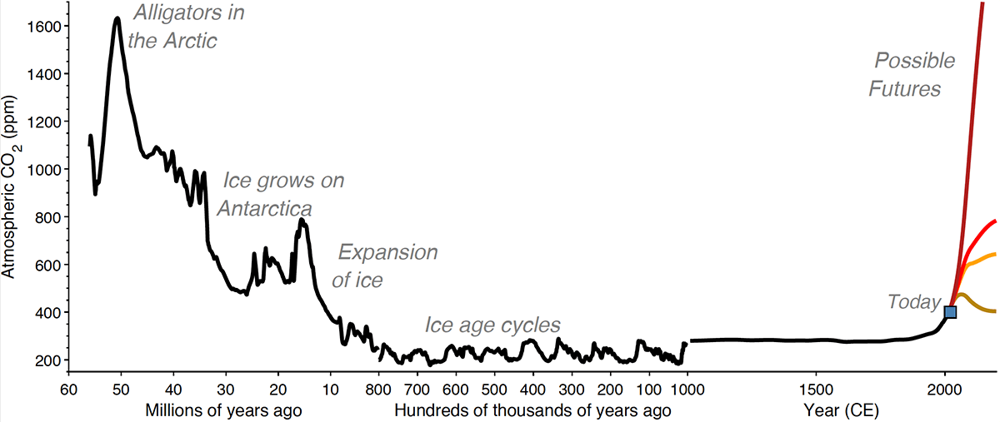
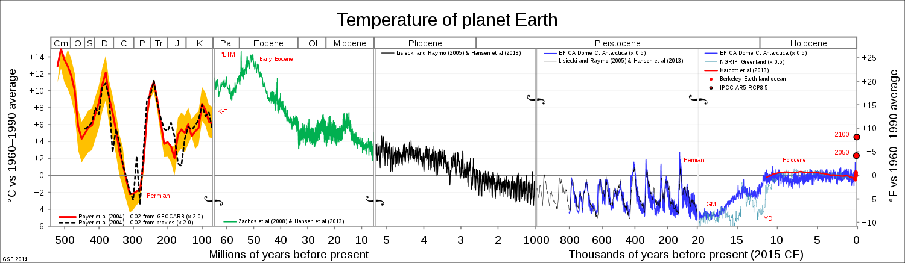

Multiple causes are responsible for climate change, natural and anthropogenic, but the most severe cause is by humans: greenhouse gas emissions. Today, the world is 2 degrees Fahrenheit warmer than it was in 1880. The UN hopes to limit the rise in temperature in this century to 2.7 degrees Fahrenheit, though the UN notes that with current policies in place, the rise will more likely be 5 degrees Fahrenheit. As seen in the correspondence between the two graphs below, the global temperature typically follows the amount of carbon dioxide in the atmosphere. That is why the UN wants to limit the amount of greenhouse gas emissions to net zero as soon as possible.
 The achievement of net zero carbon emissions requires global civilization to switch energy sources from petroleum, natural gas, and coal. The most viable new energy sources will be renewable energy like solar, wind, and hydropower. Despite the 2022 breakthrough at the National Ignition Facility at Lawrence Livermore National Laboratory – the first fusion reaction in a laboratory that produced more energy than it took to start the reaction – fusion power is still in its nascent stage though more fission power plants could complement the increase of renewable energy. The Biden Federal Sustainability Plan for net zero emissions from the federal government by 2050, initiated by executive order 1457 in 2021, is an example of such a movement away from polluting sources and to clean sources of energy that will achieve net zero emissions. Once the federal government has made the transition, then society will have a good model to follow.
Despite a majority of citizens who believe the federal government is not doing enough to stop the progress of climate change, currently there is a lack of a societal shift toward renewable energy. The incremental rise in greenhouse gas emissions, temperature, and extreme weather events has caught the attention of people, but not enough to move them to action individually or as a collective for the most part: Only 8% of homeowners in the US have installed solar panels on their homes. A danger of the model whereby incremental rise in emissions, temperature, and extreme weather events incrementally raises the consciousness of citizens, is that the incremental rise might trigger a feedback loop – such as snow and ice loss which results in a loss of reflection or melting permafrost which releases methane – and the rise in emissions, temperature, and extreme weather events will increase dramatically before citizens can react and mitigate the effects of climate change. So, the Biden Federal Sustainability Plan is a smart beginning to the transition, and hopefully citizens follow soon so that the feedback loops and pernicious effects of climate change are avoided.
A new study in Nature, called “Papers and patents are becoming less disruptive over time,” argues that there has been a drop in disruptive science since 1945. The authors of the paper created an index which measures the consolidation and disruption of scientific papers by considering citations as a metric: In brief, more citations of the citations of a paper that is cited indicates consolidation and fewer citations of the citations of a cited paper indicates disruption. Reading about the paper made me consider disruption in technology also. Consider, for example, the Large Hadron Collider at CERN and the James Webb Space Telescope of NASA: Pinnacles of technology, the machines refine but do not redefine scientific knowledge about their objects of study, elementary particles and galaxies, respectively.
Other recent technology might be considered more disruptive for an impact on civilization rather than challenging a scientific paradigm: the Internet was a disruption in data transfer. People are better connected through the World Wide Web and therefore more educated. Major institutions like the White House and the UN give information directly such as in the form of daily press briefings. Smaller players transmit the information through social media networks and also respond there and in other places like in blogs. The knowledge maintained on the Web is made accessible through search engines, and Google search disrupted search engines by ranking query results according to the number and quality of pages that link to a page. Another recent technological advancement by Google is the Sycamore quantum processor which achieved quantum supremacy in 2019: The processor computed in seconds what it would take a supercomputer thousands of years to compute.
In addition to the Internet, machine learning has become more disruptive for its impact on civilization. In 2016, AlphaGo beat a champion Go player, and new versions of the machine can learn the rules of different games and then play the games sophisticatedly. In 2020, Waymo released a self-driving taxi onto public roads, and in 2021, Honda launched a SAE (Society of Automotive Engineers) level 3 commercial vehicle: Level 3 is conditional self-driving. In 2022, ChatGPT became a versatile conversationalist able to posit hypothetical counterfactuals and to remember previous input during later responses, though the AI bot has the limitations of hallucination and access to information only after a certain date. The Atlas robot, released in 2013, now can drive, connect a hose to a pipe, and turn a valve on the pipe to start water flow. So, if science is becoming less disruptive, technology seems to have continued to disrupt well after 1945.
The globe has seen a number of protests in recent weeks. Protests in Peru are against a progressive politician, President Boluarte, who sided with conservatives to consolidate power, after the removal of a popular if autocratic President. Protests in France, in which over a million people marched last week, are against raising the retirement age for most workers. Protests in Israel are against the plans of a new government to alter the judicial system and thereby weaken the separation of powers of the government. Protests in Iran are against the governmental response to the arrest and death of Amini and other repressive actions. And protests in South Africa are against rolling blackouts of energy. Freedom House ranks Peru, France, Israel, and South Africa as free nations – and Iran as unfree. So, it is no surprise that governmental responses have been a toleration of the protests except in Iran where police and security forces have restricted and even combatted the demonstrators. The violent response of the Peruvian government is anomalous, however, and I suspect that Peru will have a much lower score in the 2023 Freedom House ranking than the nation did in the years leading up to now. The Global Conflict Tracker by the Council of Foreign Relations has about two dozen conflicts mentioned in 2023. The conflicts range from instability to war. The conflicts occur mostly in the nations of the regions of Asia, the Middle East, and sub Saharan Africa. Freedom House rates many of the nations which are in conflict as unfree.
Finally, a 2023 Oxfam report notes that the global richest 1% took almost two-thirds of the wealth created since 2020. That is 42 trillion dollars. The amount is almost double what the bottom 99% made during the same time span. In terms of wealth in the US, a 2022 Congressional Budget Office report notes that the top 1% of families hold one-third of US wealth. The top 10% of wealthy families control 72% of the wealth of the nation. The bottom half of families control only 2% of the wealth. Reading the statistics from these reports made the inequality seem stark, but I reminded myself of the philosophical notion of a rising tide which lifts all boats: Global capitalism is growing increasingly unequal, but at the same time the living standards of everyone are getting significantly better. Consider the following statistic for a historical perspective on capitalism: In 1820, 94% of the global population lived in extreme poverty, while in 2015, the percentage had fallen to 9.6%.